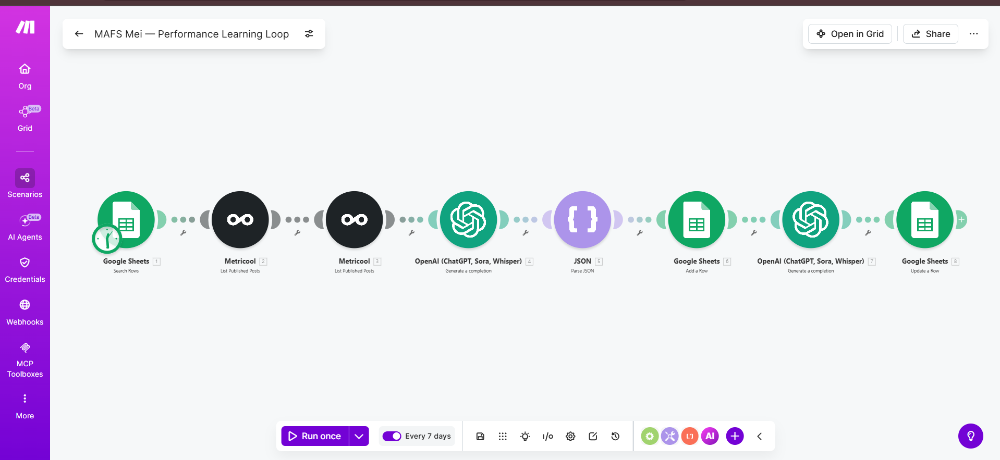

The Challenge
Publishing on autopilot is great, but without a feedback loop the system never improves. There was no structured way to learn from what actually performed.
The client needed an automated weekly loop that pulls real performance data, analyzes wins and losses, and updates the strategy the content engine uses next.
How It Works
- Collect: Every 7 days, Make.com reads tracked content from Google Sheets and pulls published-post stats from Metricool.
- Analyze: OpenAI identifies patterns in the best and worst performing posts.
- Structure: The insights are parsed into clean, structured learnings.
- Store: Learnings are added to a Google Sheet that acts as the engine's memory.
- Feed back: A second AI pass updates strategy so the next cycle posts smarter.
Tools Used
Make.comMetricoolOpenAIGoogle Sheets
The Result
Weekly
Automatic optimization
Data-led
Every content decision
Compounding
Quality improves over time
Want something like this for your business?
Tell me what is eating your team's time and I'll show you exactly how to automate it.